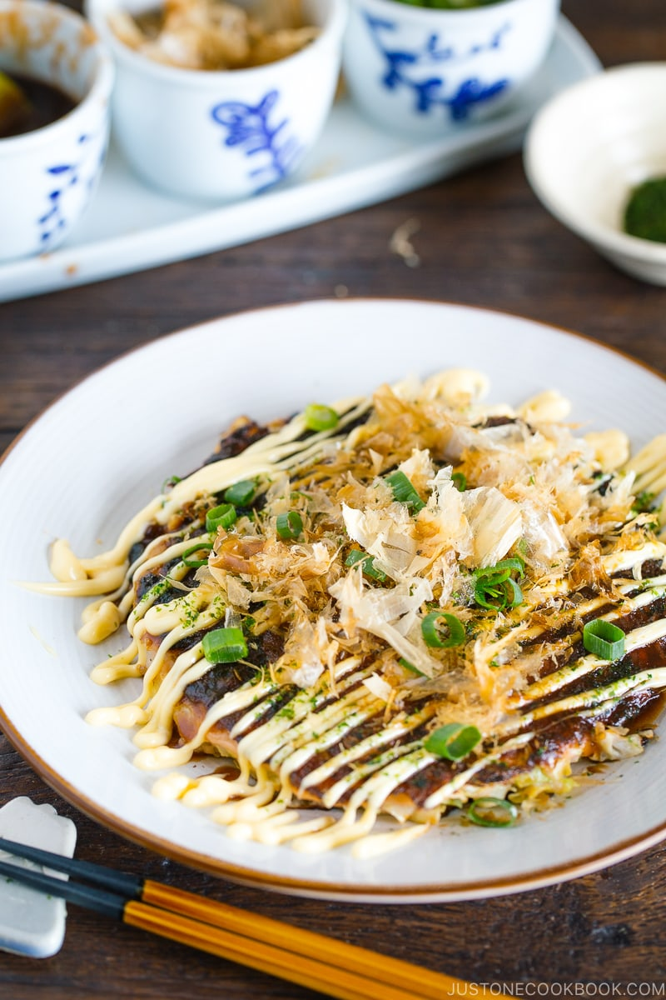

Okonomiyaki

Description
What is better than a pancake? A delicious savory pancake! Famous in Japan from the Osaka region is this awesome
flavour packed pancaked that will leave you completely stuffed once you are done eating it.
Ingredients
For the Batter
- 1 cup all-purpose flour
- 1/4 tsp kosher salt
- 1/4 tsp sugar
- 1/4 tsp baking powder
- 5.6 oz nagaimo/yagaimo (can replace with more baking powder or beaten egg whites)
- 3/4 cup dashi
- 4 large eggs
- 1/2 cup tenkasu/agedama (can replace with tempura or fried batter scraps)
- 1/4 cup pickled red ginger
For the Other Ingredients
- 1 head green cabbage
- 1/2 lb sliced pork belly
- neutral-flavoured oil
For the Toppings
- Okonomiyaki Sauce
- Japanese mayonnaise
- (optional) Dried bonito flakes
- green onions/scallions
- (optional) pickled red ginger
Instructions
To Prepare the Okonomiyaki Batter
- In a large bowl, combine all-purpose flour, salt, sugar, and baking powder and mix all together.
- Peel and grate the nagaimo in a small bowl (or add the replacement)
- Add the grated nagaimono and dashi to the bowl
- Mix it all together until combined. Cover the bowl with plastic wrap and let it rest in the refrigerator for
at least one hour
To Make Okonomiyaki Sauce
- Combine sugar, oyster sauce, ketchup and Worcestershire sauce in a small bowl. Mix them all until sugar is
completely dissolved.
To Prepare the Other Ingredients
- Discard the core of the cabbage and then mince the cabbage leaves.
- Cut the pork belly slices in half and set aside.
To Cook the Okonomiyaki
- After one hour, take out the batter from the refrigerator. Add eggs, tempura/batter scraps, and
pickled red ginger to the bowl. Mix until combined.
- Add the minced cabbage to the batter, one-third of it at a time. Mix well before adding the rest.
- In a large pan, heat the vegetable oil on medium heat. When the frying pan is hot (400ºF or 200ºC), spread
the batter in a circle on the pan. We like thicker okonomiyaki (the final thickness is ¾ inches or 2 cm). If
you're new to making okonomiyaki, make it smaller and thinner so it's easier to flip.
- Place 2-3 slices of pork belly on top of the okonomiyaki and cook covered for 5 minutes.
- When the bottom side is nicely browned, flip it over.
- Gently press the okonomiyaki to fix its shape and keep it together. Cover and cook for another 5
minutes.
- Flip it over one last time and cook uncovered for 2 minutes. If you're going to cook the next batch,
transfer the cooked okonomiyaki to a plate.
To Serve
- Spread the okonomi sauce on top with a brush or spoon, drizzle with Japanese mayonnaise in a zigzag pattern
(optional), and sprinkle with dried bonito flakes. You can also top with dried green seaweed, chopped green
onions, and pickled red ginger.
Nutrition
- Calories: 725 kcal
- Carbohydrates: 62 g
- Protein: 21 g
- Fat: 44 g
- Saturated Fat: 13 g
- Polyunsaturated Fat: 5 g
- Monounsaturated Fat: 16 g
- Trans Fat: 1 g
- Cholesterol: 227 mg
- Sodium: 643 mg
- Potassium: 916 mg
- Fiber: 9 g
- Sugar: 12 g
- Vitamin A: 502 IU
- Vitamin C: 73 mg
- Calcium: 153 mg
- Iron: 4 mg